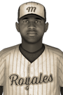

|
|
|  | CBL Gives Best Pitcher Award Wednesday, August 17th, 1927 Xavier Evremond was the most outstanding pitcher in the Central Baseball League this year and today was acclaimed the Pitcher of the Year Award winner for his efforts. Evremond had a marvelous season, going 9-2 with an impressive 1.65 ERA in 14 starts. He struck out 100 in 93 innings and limited opposing batters to a .199 batting average. He received 6 first place votes out of a possible 8. Phat Watitapun of the Winnipeg Jr. Thunder finished second in voting with 1 first place vote, while Martin Daves of the Lincoln Pioneers finished third with 1 first place vote. Player - Team - First Place - Total Points Xavier Evremond - Winnipeg Jr. Thunder - 6 - 48 Phat Watitapun - Winnipeg Jr. Thunder - 1 - 33 Martin Daves - Lincoln Pioneers - 1 - 31 Millard Powers - Adams Mounties - 0 - 11 Mel Berman - Adams Mounties - 0 - 8 Desi Pozas - Minneapolis Jr. Saints - 0 - 5 |   |